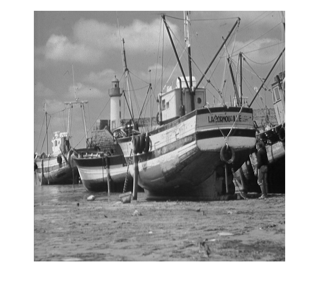
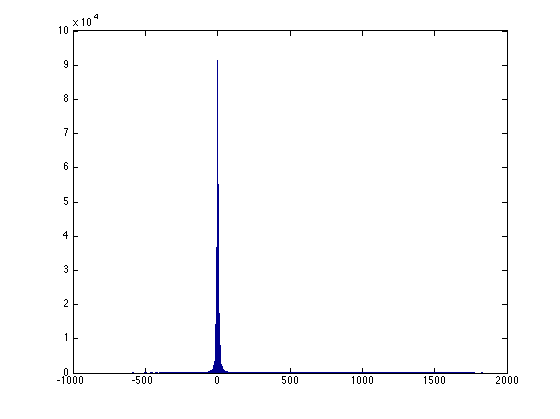

Haar Wavelet Transform
We study the Haar transform this week. Our goal is to implement the Haar wavelet, which will be used for simple inverse problems in the coming weeks.
Contents
We will work on the 'boat' image.
x = imread('boat.512.tiff');
imshow(x);
x = double(x);
 Analysis Filter Bank
The analysis filter bank consists of average and difference operators applied horizontally and vertically. Here are the horizontal average and difference images. Notice that we stack them together so that we end up with an image of the same size. This allows to process the coefficients easily.
HorizAvg = ( x(:,1:2:end) + x(:,2:2:end) ) / sqrt(2);
HorizDiff = ( x(:,1:2:end) - x(:,2:2:end) ) / sqrt(2);
Horiz = [HorizAvg HorizDiff];
figure;
imagesc(Horiz);colormap(gray);axis image;
Let us now obtain vertical average and difference images applied to the horizontally processed image.
VertAvg = ( Horiz(1:2:end,:) + Horiz(2:2:end,:) ) / sqrt(2);
VertDiff = ( Horiz(1:2:end,:) - Horiz(2:2:end,:) ) / sqrt(2);
Vert = [VertAvg; VertDiff];
figure;
imagesc(Vert); colormap(gray); axis image;
Your first task is to write a function called 'HaarAFB' that takes an input image x to the coefficients above. Here's how your function should work like.
c = HaarAFB(x); % c should be the same as 'Vert' dif = c - Vert; % difference must be numerically zero max( abs( dif(:) ) )
ans = 1.1369e-13
Synthesis Filter Bank
If we know the average and difference of two numbers, we can easily obtain the numbers. Therefore we can go back from c to x above. Here are the vertical average and difference images applied to the horizontally processed image.
c = Vert;
c(1:2:end,:) = ( Vert(1:end/2,:) + Vert(end/2+1:end,:) ) / sqrt(2);
c(2:2:end,:) = ( Vert(1:end/2,:) - Vert(end/2+1:end,:) ) / sqrt(2);
figure;
imagesc(c); colormap(gray); axis image;
Note that this operation takes Vert to Horiz. Let us check that
dif = c - Horiz; max( abs( dif(:) ) )
ans = 1.1369e-13
We can similarly invert the horizontal average/difference operations and obtain the original image.
d = c;
d(:,1:2:end) = ( c(:,1:end/2) + c(:,end/2+1:end) ) / sqrt(2);
d(:,2:2:end) = ( c(:,1:end/2) - c(:,end/2+1:end) ) / sqrt(2);
figure;
imagesc(d); colormap(gray); axis image;
Let us check if we got back the original image
dif = c - x; max( abs( dif(:) ) )
ans = 338.2082
Your next task is to write a function 'HaarSFB' that inverts 'HaarAFB'.
y = HaarSFB(Vert); % y should be the same as the original image
dif = x - y;
max( abs( dif(:) ) )
ans = 1.4211e-13
Iterating the Filter Banks
Suppose we keep applying this function on the lowpass part of the image. Here's an additional stage.
c = Vert;
x1 = c(1:end/2,1:end/2);
c1 = HaarAFB(x1);
c(1:end/2,1:end/2) = c1;
figure;
imagesc(c); colormap(gray); axis image;
Here's a further stage
x2 = c1(1:end/2,1:end/2);
c2 = HaarAFB(x2);
c1(1:end/2,1:end/2) = c2;
c(1:end/2,1:end/2) = c1;
figure;
imagesc(c); colormap(gray); axis image;
Observe that as we iterate, the lowpass image gets smaller but the rest of the coefficients are close to zero. This behavior is typical of many images and is the main reason for the succcess of methods based on 'sparsity' in image processing.
Write a function 'HaarDWT' that keeps applying HaarAFB which allows to choose the number of stages. Here's a demonstration.
J = 3; % number of stages coef = HaarDWT(x,J); dif = coef - c; % check that HaarDWT produced the same coefficients as above max( abs( dif(:) ) )
ans = 4.5475e-13
Now that we have an iterated version of the analysis filter bank. We need a function that inverts it. Write a function 'HaarIDWT that inverts 'HaarDWT'
y = HaarIDWT(coef,J); dif = x - y ; max( abs( dif(:) ) )
ans = 1.7053e-13
Coefficient Distribution
To see the distribution of the coefficients we can look at the histogram.
figure; hist( coef(:) , 500 );
Observe that coefficients are concentrated around zero. That is, many coefficients are close to zero.
Alternatively, we can monitor how the energy of the error changes as we keep a small percentage of coefficients.
cs = sort( abs( coef(:) ) , 'descend'); L = length( coef(:) ); % number of coefficients percentage = 0.1:0.1:5; % percentage of coefficients kept MSE = []; en = sum( cs.^2 ); %this is the total energy for p = percentage, K = ceil( p * L / 100) ; error = sum( cs(K+1:end).^2 ); % this is the error MSE = [MSE error/en]; end figure; plot(percentage,MSE*100); xlabel('Percentage of Coefficients Kept'); ylabel('Percentage of Error');
In-Class Assignment
- Write a function 'HaarAFB' takes as input an image and applies a 1-stage Haar filter bank as described above.
- Apply your function to the 'Cameraman' image below and show the coefficients.
- Write a function 'HaarSFB' that inverts 'HaarAFB', as discussed above. The function should take as input the coefficients produced by HaarAFB and return the original image.
- Check that your function 'HaarSFB' correctly inverts 'HaarAFB' using the 'Cameraman' image, as above.
- Write a function 'HaarDWT' that applies a J-stage Haar DWT. The function should take as input the image and J and should return the wavelet coefficients.
- Apply your 'HaarDWT' function to the 'Cameraman' image. Display the wavelet coefficients. Your function should be able to handle any J. Try in particular J = 3 and J = 5.
- Write a function 'HaarIDWT' that inverts 'HaarDWT'.
- Check that 'HaarIDWT' correctly inverts 'HaarDWT' using the 'Cameraman' image for the two choice of J above.
Ilker Bayram, Istanbul Teknik Universitesi, 2015